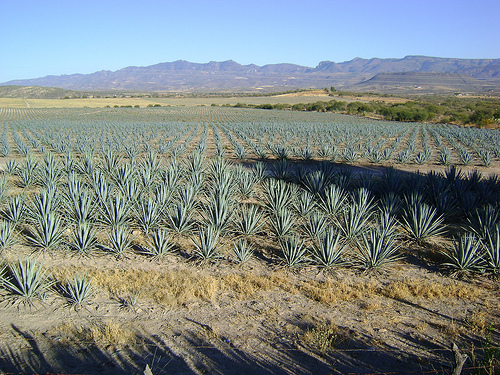
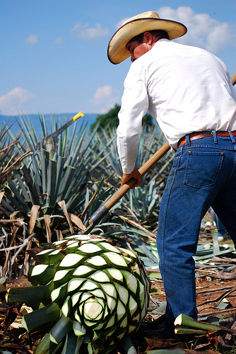

Tequila, ¿con las horas contadas?
Los años noventa trajeron consigo un aumento a la economía de la industria del tequila. En esta década la industria del tequila se colocó como una de las más atractivas. Actualmente las 128 destilerías existentes para la producción del tequila procesan cerca de 788 mil toneladas métricas de agave, es decir una planta de origen mexicano, para producir 242 millones de litros de tequila para exportación. El tequila tiene fama mundial y sus precios son sólidos y rentables. Sin embargo, los productores del tequila están conscientes de que existe un problema con la producción del tequila.
Existe un problema con la materia prima para la elaboración del tequila: el agave. El género agave está compuesto por plantas suculentas pertenecientes a una extensa familia botánica del mismo nombre: agavaceae. La planta se conoce con el nombre común de agave, pita, maguey, cabuya, mezcal y fique. El centro de origen del agave está en México, aunque actualmente se distribuyen desde el sur de Estados Unidos hasta el norte de Venezuela. Existen más de 200 especies pertenecientes al género de agavaceae con una gran diversidad en cuanto a formas, tamaños, colores y estrategias de vida. Se calcula que esta especie surgió hace apenas 12 millones de años.
Inicio del problema de la materia prima
En los años noventa el agave tuvo una gran demanda en respuesta a un incremento en el consumo de tequila en Estados Unidos. El incremento en el consumo se debió a la popularidad del cóctel Margarita, el cual usa tequila para su preparación. Las tequileras, es decir, las compañías productoras de tequila, ante la creciente demanda de tequila consumieron casi todo el agave disponible para la industria. Las tequileras empezaron a procesar agaves con tan solo tres años de edad, cuando lo habitual es que esta planta madure a los 10 años para poder destilarla. En los dos últimos años de los años noventa se llegaron a procesar hasta 65 mil toneladas mensuales de plantas de agave.
La gran demanda por la planta de agave puso en alerta a los agricultores de la región en sembrar agave para ganar más dinero. El agave solamente se puede sembrar en el Territorio de denominación de origen para el Tequila, que consta de 181 municipios: 125 de Jalisco, ocho de Nayarit, siete de Guanajuato, 30 de Michoacán y 11 demarcaciones de Tamaulipas. El aumento en la siembra del agave se realizó sin los controles respectivos, ya que muchos de los agricultores que decidieron sembrar agave no estaban familiarizados con el cultivo de la planta e hicieron todo “a la que salga”. Cuando los agricultores sembraron sin control sanitarios o de calidad las plantas de agave (que tardan entre 8 a 10 años en madurar) crecieron con muy baja calidad. 
Los productores no tomaron en cuenta que la planta del agave está protegida por la primera denominación de origen mexicana. Además, los productores no consideraron que la industria tequilera tiene un límite de capacidad de producción y mercado de la bebida. Para recuperar su inversión, los productores tendrían que esperar de 7 a 9 años, que es el lapso de maduración de la planta de agave. La sobreproducción del agave ocasionó daños a la economía de los agricultores de agave y también a la industria tequilera. Esta situación perjudicó la calidad del tequila. Solo habían muy pocas firmas con un tequila bueno. De las 120 mil hectáreas sembradas con agave azul actualmente, al menos 30 mil (casi 25% de la superficie total de cultivos) se encuentran afectadas por enfermedades o plagas.
Regresa el problema
Actualmente en México existe un gran problema con las plantaciones del agave azul que se han desarrollado como consecuencia de los mecanismos de comercialización y las afectaciones indirectas del cambio climático. El clima ha afectado de manera indirecta a favorecer enfermedades que, definitivamente, han dañado el cultivo del agave. Con base en datos establecidos, se tiene una merma de 30% de la plantación total que asciende a 120 mil hectáreas sembradas de agave. En números, esto equivale a pérdidas entre 150 y 300 millones de dólares.
Los industriales continúan prefiriendo utilizar agaves más jóvenes por tener un costo menor. Uno de los primeros síntomas del problema que se puede producir es el alza del precio del agave. El incremento al precio del producto sería el resultado de la total escasez del agave, provocada por la comercialización irracional y también motivada por plagas y enfermedades por efectos del cambio climático global. Los productores de agave piensan que las afectaciones directas de los cambios del clima en las plantas de agave se percibirán en unos 10 o 20 años. Por esta razón, los productores piden a los gobiernos federales, estatales y municipales, a dar prioridad a los apoyos en el cultivo de la planta, mantener los sembradíos en buenas condiciones y obligar a las tequileras a utilizar agaves totalmente maduros.
Actualmente, el Consejo Regulador del Tequila se encuentra realizando una serie de investigaciones y promoviendo seminarios entre los agricultores y productores ligados directamente con el agave, para no volver a tener los problemas de falta de esta planta como sucedió en los años 90. Además de ello, el Consejo Regulador está capacitando a los agricultores para que le den la atención requerida a sus plantaciones de agave. Otra de las tareas que tiene esta organización es examinar la cosecha del agave para evitar que no se esté procesando agaves jóvenes, que degeneran el producto final. Esta es la realidad del Tequila, que goza de fama mundial, pero que sus controles internos podrían causar un desabastecimiento de un producto de buena calidad.